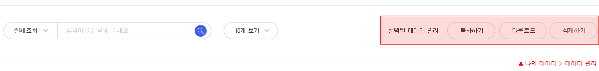

데이터 생성
- 나의 데이터 > 데이터생성에서 사용자의 데이터를 업로드할 수 있습니다.
- 업로드한 사용자 데이터를 LBDMS서비스에서 활용할 수 있는 형태의 위치데이터로 전환하여 분석 기능에 활용 할 수 있습니다
데이터 관리
- 나의 데이터 > 데이터 관리에서 데이터의 종류에 따라 관리할 수 있습니다.
- 업로드한 사용자 데이터를 수정, 삭제, 복사, 다운로드, 그룹에 공유, SGIS+전송 등에 활용할 수 있습니다.
- 전환된 위치 데이터를 병합하여 활용할 수 있습니다.

데이터 분석 6종
- 전환된 위치데이터를 데이터 분석 메뉴에서 기초 분석(2종), 응용 분석(4종)에 활용할 수 있습니다.
- 기초 공간 분석 : 전환된 위치정보를 기반으로 경계를 생성할 수 있는 공간분석기법으로 경계 분석과 보로노이 다이어그램을 활용할 수 있습니다.
- 응용 공간 분석 : 위치정보를 기반으로 데이터의 관계성과 특성을 파악할 수 있는 분석기법 으로 버퍼 분석, 입지 계수, 공간자기상관분석, 데이터 간 연산 분석을 활용할 수 있습니다.
공유 게시판
- 사용자의 소속 그룹 사용자들과 데이터 및 분석 결과를 공유할 수 있습니다.
- 공유 게시판에서 그룹별 공유 내역을 확인할 수 있습니다.